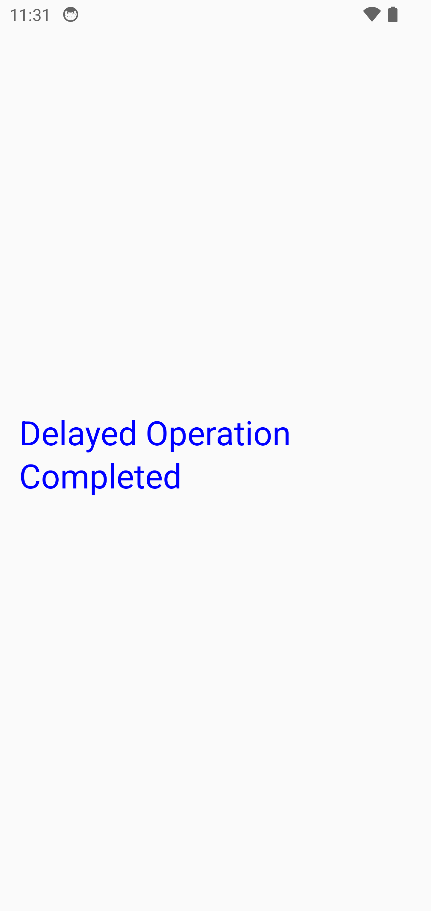
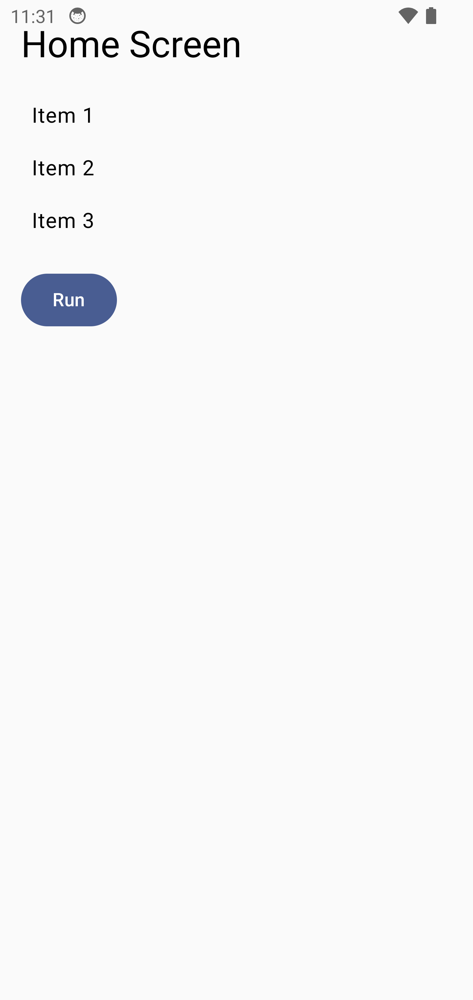

📊 Summary
| 📱 App | com.carlosjimz87.maestrotestingdemo |
|---|
| 🧩 OS | Android 11 (Docker Emulator) |
|---|
| 📱 Device | device:generic_x86_64_arm64
device:generic_x86_64_arm64 |
|---|
| ✅ Tests Passed | 15 |
|---|
| ❌ Tests Failed | 0
0 |
|---|
| 📊 Success Rate | 100.0% |
|---|
🧪 Test Report
CI detected, analytics was automatically enabled.
To opt out, set MAESTRO_CLI_NO_ANALYTICS environment variable to any value before running Maestro.
Running on emulator-5554
> Flow flows
🚀 Launch app "com.carlosjimz87.maestrotestingdemo" with clear state...Run login2home.yaml...
Run login2home.yaml...
🔍 Assert that "Login" is visible... ✅ COMPLETED
👆 Tap on "Username"... ✅ COMPLETED
📝 Input text carlos... ✅ COMPLETED
👆 Tap on "Password"... ✅ COMPLETED
📝 Input text 1234... ✅ COMPLETED
👆 Tap on "Login"... ✅ COMPLETED
🔍 Assert that "Home Screen" is visible... ✅ COMPLETED
📸 Take screenshot screenshots/login2home...Run login2home.yaml... 🏃 RUNNING
Run login2home.yaml... 🏃 RUNNING
🔍 Assert that "Home Screen" is visible...Run home2details.yaml...
Run home2details.yaml...
👆 Tap on "Item.*", Index: 1... ✅ COMPLETED
⏳ Wait for animation to end... ✅ COMPLETED
🔍 Assert that "Details for Item 2" is visible... ✅ COMPLETED
📸 Take screenshot screenshots/home2details...Run home2details.yaml... 🏃 RUNNING
Run home2details.yaml... 🏃 RUNNING
🔍 Assert that "Details for Item 2" is visible...Run details2delayedOp.yaml...
Run details2delayedOp.yaml...
⏳ Wait for animation to end... ✅ COMPLETED
Press back... ✅ COMPLETED
👆 Tap on "Run"... ✅ COMPLETED
🔍 Assert that "Delayed Operation Completed" is visible... ✅ COMPLETED
📸 Take screenshot screenshots/details2delayedOp...Run details2delayedOp.yaml... 🏃 RUNNING
Run details2delayedOp.yaml... 🏃 RUNNING
🔍 Assert that "Delayed Operation Completed" is visible... ✅ COMPLETED
🖼️ Screenshots
🔹 details2delayedOp
🔹 home2details
🔹 login2home